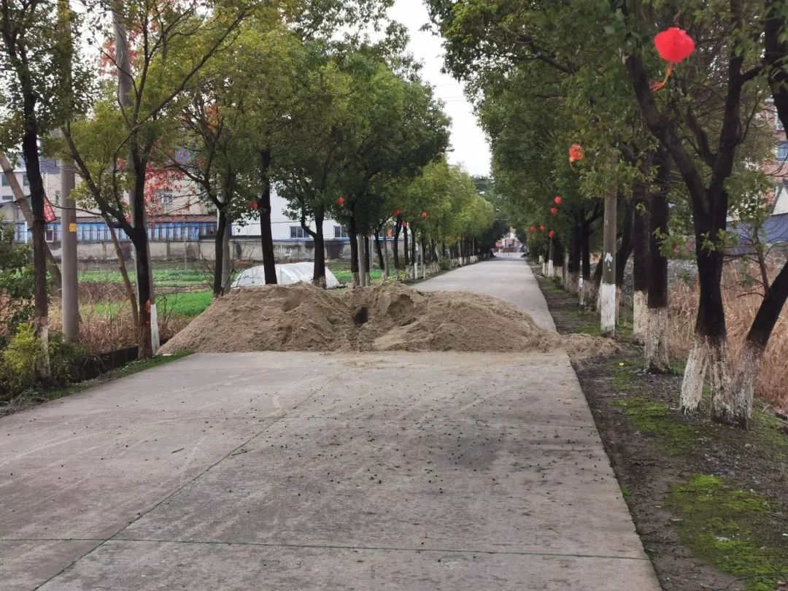

回家过年，我遇到了“封村”
原文链接 备份链接 *************▲************* 1月27日，旅客在关闭的青岛汽车总站外徘徊。 （新华社记者 李紫恒/图） 全文共*1705*字，阅读大约需要*4*分钟。 我们村“封”在村里的年轻人每天猫在家 …

当上门拜年的人扑空、救护车里的医护人员被迫下车清理路障、村民风声鹤唳草木皆兵，“封村”政策执行的粗放性又不免被摆到台面上来

洛阳南村小区门口悬挂着横幅 / 受访者 供图
文 |《财经》记者 王静仪 王斌斌 特约撰稿 杨佩谦
编辑 | 施智梁
或沙石封路，或人为阻挡，为了防止源自武汉的新型冠状病毒疫情的蔓延，全国多地村庄在春节前后相继进行大规模的“封村”行动，引发外界关注和争议。
据《财经》记者不完全统计，自正月起，河南、河北、山西、山东、浙江、广东等多个省份在封锁村庄对外通行的道路，禁止车辆通行，其中尤以华北华中各省尤甚，拒绝一切非本村的外来人员和车辆进入。
几乎没有人否认，面对疫情在全国范围蔓延，“封村”在这样非常时刻的必要性。早在这之前，村民也多已自发减少了外出活动。但当上门拜年的人扑空、救护车里的医护人员被迫下车清理路障、村民风声鹤唳草木皆兵，“封村”政策执行的粗放性又不免被摆到台面上来。
同时，人员的流动没有被封住，本村村民能在登记后自由出入，这样的“封村”成效几何？
浙江嘉兴：村里来了一辆“鄂F”
“有群众举报说，一辆湖北牌照的车辆在村里面开来开去，是什么情况？”1月27日晚饭前后，村委干部匆匆驱车赶到该村的疫情防控检查点，也是“封村”之后车辆唯一的出入口。
村子在浙江省嘉兴市某百强县，位于三个县市的交界处，一般过年时节，人来车往，流量很大。截止1月28日24时，嘉兴市累积报告新型冠状病毒感染的肺炎确诊病例14例，其中重症病例5例。
“现在主要担心的是很多回家过年的工人回这边，或者有湖北籍人士来这边投亲靠友。”该村村支书对《财经》记者表示，要特别注意他们中是否有感染的人。
1月26日下午，各小队的小队长（村民组长）被叫到村委开会，正式传达从镇里下发的“封村”通知，同时沟通具体封锁哪些道路、最后留哪个口子作为疫情防控检查点（简称“卡点”）通行，能够最方便村民生活。
很快，村里通往其他各村的道路，陆续被沙子、泥土等封堵，只留下一个出入口。在此之前，相邻的村子已经开始陆陆续续“封村”，其中一个村子还从一家工厂调用一辆货车堵在路口。

相邻的村子已经开始陆陆续续“封村”，其中一个村子还从一家工厂调用一辆货车堵在路口 / 记者王斌斌 摄

村里通往其他各村的道路，陆续被沙子、泥土等封堵 / 记者王斌斌 摄
多位接受《财经》记者采访的村民都表示理解这样的举措，“是为了大家好，没有特殊情况，也不会外出。”
《财经》记者观察了多条被堵道路后发现，这些封堵措施主要是针对汽车，而行人以及两轮电瓶车可以从边缘地带通行。在其中一条路上，《财经》记者就看到一辆电瓶车驶离村子。
26日下午4点，村委在该入口设立了“疫情防控检查点”，搭建了一个简易的棚子，并开始招募18岁以上、50岁以下的志愿者进行执勤检查。
卡点执勤为24小时，三班倒（0-8点，8-16点以及16-24点）。据了解，志愿者都是村委号召、自愿报名的。26日，征集到志愿者十余人，每班安排两人。
在村支书发布的卡点要求中，常规操作是核验身份、登记身份证号、联系方式以及车牌号，并测量体温，着重强调要询问近两周是否去过武汉。若为湖北籍人士，需了解现在居住地。

在卡点处临时搭建的棚子 / 记者王斌斌 摄
针对湖北人员，体温异常者，拨打120将其带到指定医院。体温正常者，如果住在企业，需要企业负责人到场确认，在企隔离；如住出租房，联系派出所核实身份，并与房东取得联系，由房东和租客沟通，在出租房隔离或者劝返。如果来自武汉，体温正常也需带到镇隔离点。
有志愿者告诉《财经》记者，在具体执行过程中，一开始主要是针对外地来村的人员进行检查、登记，特别是外省牌照和外地返乡人员，需要注意并上报，拒绝外地人口进村。如果是当地村民回家，一般问明从哪里来，家住哪里之后，就会放行。
尽管要求测量体温，由于设备未到位，这一要求成为一纸空文。28日，卡点的志愿者对《财经》记者表示，他们还没拿到体温检测的设备，不过“听说东西已经到镇里了”。
绝大多数来往车辆都很理解“封村”的举措，停车、摇下车窗，按照要求配合检查、登记等。经过卡点的以本地人士和本地车辆为主，没有发现特别情况。
直到1月27日晚饭前后，村民举报有“鄂F”的湖北牌照车辆在村内行驶。
村委来人调查，与检查点的志愿者沟通，查看相关记录后，才发现是虚惊一场：该鄂F牌照车辆为京东快递车，晚饭前进入该村。因为快递员是本地口音，所留身份证号码的前几位也显示他是本地人，并非从湖北返乡人士，因此执勤人员放行。
当天晚上7时许，鄂F牌照的快递车辆再次经过检查点，离开该村。当天执勤的志愿者透露，车辆驶离后，有村民来到卡点附近了解“鄂F”车辆的情况，根据交流内容来看应该就是举报的群众，其中一位女性表示，“要家里的小孩这几天不要网购了，这次弄得人心惶惶的。”
1月28日，“封村”两天后，参与执勤检查的志愿者数量不断增加，从十多个到二十几个，排班从一天三班变成一天四班，同时村委每个班次都派人驻场，即每天四班倒，每班都有三人值守。
登记的标准变得严格，现在本村人进村也需要登记。对于道路的封锁也在加码。此前，被沙土封锁的道路还能通行电瓶车，28日开始，村里调了几辆汽车，分别横在几处堆放沙土的地方。
山东滨州：村民打算“越狱”上班
1月26日，山东省滨州市的新型冠状病毒感染的肺炎确诊病例达到3例。滨州市人民政府随即发布通告，暂停市行政区范围内客运车辆的运行，包括长途客车、公交车和出租车等。和交通应急响应一起启动的，还有大规模的无差别封村行动。
虽然没有来自官方的声明，但接近当地政府的知情人士向《财经》记者透露，现在是“宁可十防九空，也要切断传染源”，不管是否已有确诊病例，都需要先把人口流动控制住。滨州位于山东北部，户籍总人口394.25万人，2018年的GDP为2640.52亿元，位居全省17个地级市的第14位。
大姚家村正是被封锁的村庄之一，这里与已有确诊病例的车集村相距12公里，二者虽然同属于滨州市惠民县，但实际距离并不算近。1月26日早上，大姚家村实行了封村，除了当天村里的大喇叭进行循环广播，并没有提前下达其他通知。
平日在滨州市区上班的姚先生，封村前两天才驱车回到老家。“幸好现在是过年期间，家里年货备得足，吃的方面暂时不需要担心，不然真是措手不及。”他对《财经》记者表示，“但真的没想到我们这种小县城里也会有病例，而且封村之前对疫情基本没什么宣传，导致很多人根本不把这次的肺炎当回事，其实直到现在村里面戴口罩人的也不算多。”

某一个出村的路口被土挡住 / 受访者 供图
大姚家村的封村方式简单：堵住每个路口，不允许机动车通行。
“有的是大车拦在路上，有的是用挖掘机挖的土垒起来，还有放石头拉绳子的。”姚先生说，“虽然汽车走不了，但是徒步还是可以穿行，有些路口挡得不严实，电动车也能走。”
大姚家村允许本村人进出，但禁止外来人口进入。就在1月26日封村的当日下午，姚先生送哥哥离村，“回来的时候没有人拦下我，而且没有体温测试。”
外村人不能到大姚家村拜年了，但本村人还是可以相互串门。姚先生留意道，村民的防护意识开始提高，已经不再随意走动，“还算自觉吧。”
截至1月28日24时，滨州市新增新型冠状病毒感染的肺炎累计确诊病例6例。无差别封村还在持续进行着，前述知情人士告诉《财经》记者，滨州市行政区内的绝大部分村庄都已经“封锁”，市内的居民区也已经开始陆续限制人员进出。
姚先生有些疑惑：“政府用意挺好的，而且执行效率也很高，但是不知道这种’封车不封人’的模式有多大作用？”
但更他发愁的是，封村之后，自己如何回到滨州市区上班。虽然国务院规定春节假期延长三日至2月2日，可他的公司并没有下发相应通知，这意味按照原定计划，正月初七他就要上班了。
但是进出村的路口都被封住，他的私家车开不出去，而通往市区的公共交通也已经全部停运。大姚家村距离滨州市区45公里，驾车需要一个小时。
“实在没办法了，今明两天我打算去’越狱’试试。”姚先生有点无奈。
河南洛阳：从劝返湖北车辆到劝返本省车辆
1月29日，家住洛阳市市区的郭先生准备给住在南村的母亲送些年货，却在村口被拦了下来。
“不让进啊，所有外面来的都不让进”，村口设了好几个岗哨，“前天（27日，正月初三）就封了，本村人登记了可以出去，外面的统统不让进。”
带着一袋子年货的郭先生愣了。他拨通母亲的电话，母亲赶到村口，戴着口罩的二人汇合，没说几句话就匆匆散开。他们约定，疫情结束之前，电话联系就够了。
截至1月28日24时，洛阳市累计报告新型冠状病毒感染的肺炎确诊病例2例。尽管疫情扩散情况相对全国其他地区尚不突出，但洛阳市防控指挥部的要求严格：该市不仅从正月开始陆续“封村”，而且将车辆排查劝返范围从湖北扩大到本省的信阳和南阳等市，被网友评论为“疫情面前六亲不认”。
1月29日，洛阳市交通要道疫情联防联控工作领导小组对湖北牌照车辆及乘坐人员开始执行劝返，同时对省内信阳、南阳、周口、驻马店、商丘、郑州、平顶山七地市的机动车和人员也要劝返。河南位于湖北北部，两地经济社会往来密切，截止昨天，与湖北接壤的河南省信阳市已确诊32例，河南省省会郑州市已确诊40例。
河南多地的封村正在进行中。南村是位于城市边缘的村庄，和洛阳市区的距离只有一两公里，去探望母亲的郭先生白跑一趟，还能觉得“（封村）能理解，在这个时候应该的”。但当张先生从洛阳驱车50公里，到达邻市三门峡市藕池村的村口，却发现所有路口都已经被堵上，他急了。
“地图软件上又看不到提醒，我们也没有接到通知，我们怎么知道封村了？”张先生对村口执勤的志愿者质疑道。
志愿者寸土不让。“目前进入藕池村的七个路口，加油站和车站路口是有人值班、活动封闭，其他五个路口已经全部用土堆封闭，禁止一切外来人口进入。”
探望年逾八旬的父母未果，张先生更担忧的是，救护车来了怎么办？
“我们了解到不少救护车被堵在村口的情况”，洛阳市120急救指挥中心相关人士告诉《财经》记者，“肯定会延误急救的，但是具体多长时间不好说，因为村里也会帮忙清理。如果只拉横幅的就很快，就怕石头和土堵路的。”
一位山东省平度市人民医院的急诊科护士也对《财经》记者说，她在最近一次进村急救时，因为村里用树枝堆阻挡了道路，她不得不和同事一起下车清理路障，“别病毒没到，人就不行了”。她希望，各村庄一定要理性封村、科学封路。
“武汉肺炎”疫情系列报道

▷ 点击图片查看
责编 | 蒋丽 lijiang@caijing.com.cn
本文为《财经》杂志原创文章，未经授权不得转载或建立镜像。如需转载，请在文末留言申请并获取授权。
原文链接 备份链接 *************▲************* 1月27日，旅客在关闭的青岛汽车总站外徘徊。 （新华社记者 李紫恒/图） 全文共*1705*字，阅读大约需要*4*分钟。 我们村“封”在村里的年轻人每天猫在家 …
原文链接 备份链接 29.01.2020本文字数：3082，阅读时长大约6分钟 导读：基层疫情防控的压力主要包括居民防护意识淡薄、基层医护人员不足和防护设备短缺等。 作者 | 第一财经 吴绵强 一场导致湖北多地“封城”的肺炎疫情，影响了 …
原文链接 备份链接 《战疫口述记》，是燃财经在新型冠状病毒肺炎期间推出的特别栏目，记录疫情亲历者的观察和感受。本文为第2期，第1期请见《我在武汉战肺炎》。 作者 | 闫丽娇 唐亚华 孟亚娜 金玙璠 黎明 孔明明 苏琦 编辑 | 周昶帆 春 …
原文链接 备份链接 正月二十六。 今天的阳光远不如昨天，但天空还很明亮。到了下午，有点阴。但不冷。看天气预报，这几天都会比较暖和。 还没起床，几天前曾捐款十万的画家朋友从纽约打来电话（不会有人说是通敌吧？），说另一位远在德国的苏姓画家也想 …
原文链接 备份链接 *************▲************* 四川省巴中市巴州区，一辆鄂A车牌（武汉）轿车的车窗上，贴着红岩社区加盖公章的证明，称车主无感冒发烧现象，且正在家自行隔离。 （杜茂林/图） 全文共*4201*字， …